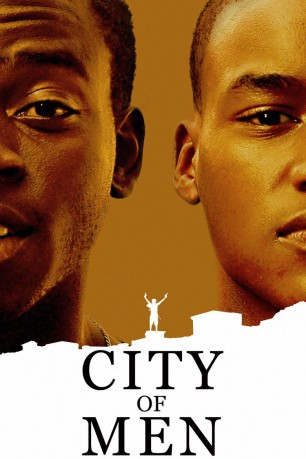

#1766 City of Men
 
 IMDB-Wertung: 7.3 / 10
IMDB-Wertung: 7.3 / 10  Metascore: 63
Metascore: 63 
City Of Men ist die konsequente Fortsetzung der gleichnamigen Serie aus dem Jahr 2002. Die beiden Freunde Acerola und Laranjinha leben in einem Armenviertel Rio de Janeiros und kämpfen jeder für sich mit den Problemen der Großstadt. Als sie durch Zufall in einen tödlichen Bandenkrieg geraten, wird ihre Freundschaft auf die Probe gestellt.
Jahr: 2007
Dauer: 106 Minuten
FSK: 16
Land: Brasilien Studio: Kinowelt Home EntertainmentTonspuren:
Untertitel:
Auflösung: 1080p (1920x1040) Größe: 7864 MB
Genre: Krimi, Drama
Regisseur: Paulo Morelli
Drehbuch: Elena Soarez, Roberto Moreira, Paulo Morelli, Elena Soarez, Bráulio Mantovani
Soundtrack: Antonio Pinto
Darsteller:
- Douglas Silva als Acerola
- Jonathan Haagensen als Madrugadão
- Claudio Jaborandy als Complice de Heraldo
- Darlan Cunha als Laranjinha
- Rodrigo dos Santos als Heraldo
- Camila Monteiro als Cris
- Naima Silva als Camila
- Eduardo 'BR' Piranha als Nefasto
- Luciano Vidigal als Fiel
- Pedro Henrique als Caju
- Vítor Oliveira als Clayton
- Vinícius Oliveira als Clayton
- Rafaela Santos als Bela da Madrugada
- Fábio Lago als Ceara
- Babu Santana als Drug lord from Morro do Careca
- Maria Francisca als Elvira
- Sônia Lino als Esmeralda
- Michel Gomes als Fininho
- Barbara Borgga als Funcionária Presídio
- Alran Pinheiro als Funcionário Cartório
- Vinicius Messias als Garçon 1
- Erik Burdon als Garçon 2
- Alex Borges als Garçon 3
- Mário Hermeto als Garçon 4
- Robson Luiz als Garoto Novo
- Cláudio Cinti als Goiano - Açougueiro
- Bronca als Guarda do Patronato
- José Mario Farias als Helinho
- Brenno Neves als Madrugadão Criança
- Alexandro Brito als Moleque da Farmácia
- Maurício Gonçalves als Nestor
- Robson Santos als Olheiro Morro do Careca
- Thogun als Pai de Acerola
- Andrea Bacellar als Patroa Cris
- Luisão Seixas als Pedreira
- Charles Torres als Pregador
- Flavio Borja als Policial 1 - Juarez
- Marcello Barcellos als Policial 2
- Luca De Castro als Síndico do Condomínio
- Aldene Abreu als Soldado 1 - Bete
- Isaac Borges als Soldado 2 - Doidinho
- Márcio Costa als Soldado 3 - Palito
- Robson Rocha als Soldado 4 - Bulu
- Dimas als Soldado Morro do Careca 1
- Jersiano Vieira als Soldado Morro do Careca 2
- Kamilla Rodrigues als Tina
- Michelle Cardoso als Valéria
- Carolina Bezerra als Vendedora Loja
- Eber Inacio als Zézé - Farmacêutico
- Jonathan Azevedo als Soldado do Madrugadão 1
Datei: X:\2-Dilogie(A-F)\City of God\City of Men (2007, FSK16, 1920x1040).mkv seit 18.08.2015
Festplatte: HD Collection-2(A-Z)-3(A-M)
 Alle Filme aus Gruppe '2-Dilogie(A-F)\City of God'
Alle Filme aus Gruppe '2-Dilogie(A-F)\City of God'